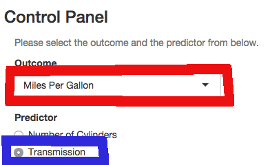

Plot Panel
It will also make some plots as the box plots shown below.

| Name> | My Shiny App - (MSA) |
| Audience> | For car enthousiasts |
| Dataset> | mtcars |
| Purpose> | Analyze the relationship between multiple variables (e.g. mpg, transmission) and how are they correlated |
| Link> | Try it here - the link will open in a new window |
This is a sample screen shot from the app.
From the drop down menu choose Miles Per Gallon and use as predictor the Transmission as shown in the picture below:

The application will printout a short summary of the selected variables. We will show only one of it below.
summary(mtcars$mpg)
## Min. 1st Qu. Median Mean 3rd Qu. Max.
## 10.40 15.42 19.20 20.09 22.80 33.90
It will also make some plots as the box plots shown below.
If you chose to show the plots for the regression model, the app will use these variableslist, mpg, wt, qsec, am.
Scroll down the page and you will be able to see the plots related to the regression model.
ENJOY